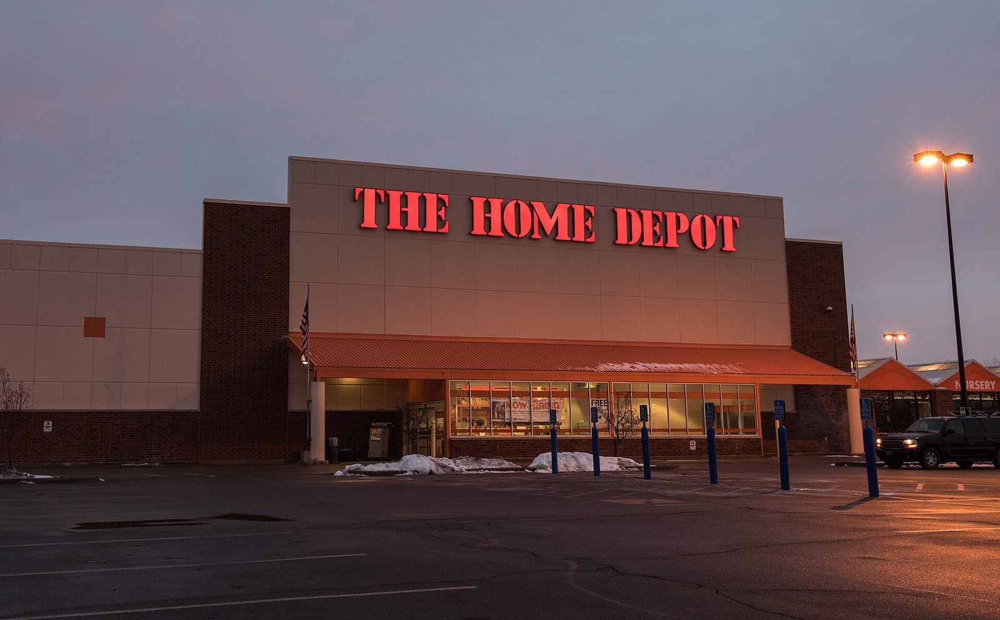

Lunedì 17 agosto 2026, Wall Street vive una seduta interlocutoria, senza una direzione chiara: nel primo pomeriggio (ora italiana), con la Borsa americana ancora aperta, gli indici sono sostanzialmente invariati. L'S&P 500 (Standard & Poor's 500 — il principale indice azionario americano) segna +0,04%, il Dow Jones Industrial Average cede -0,25%, mentre il Nasdaq Composite (l'indice tecnologico di New York) avanza +0,23%, leggermente meglio del resto del listino grazie anche alla notizia di un forte aumento dei ricavi di Anthropic, società di intelligenza artificiale. Sullo sfondo restano le nuove violenze in Medio Oriente, che alimentano timori di escalation e fanno oscillare sia le azioni sia le obbligazioni. Il mercato guarda ormai oltre la seduta odierna, verso due appuntamenti chiave della settimana: le trimestrali dei grandi negozi al dettaglio e il simposio di Jackson Hole.
La Seduta: Indici Contrastati, Nessuna Direzione Chiara
Nel pomeriggio italiano di lunedì 17 agosto, con Wall Street ancora aperta, il quadro degli indici americani è di sostanziale stallo. L'S&P 500 oscilla intorno alla parità (+0,04%), il Dow Jones è il più debole con -0,25%, penalizzato dai titoli industriali e da alcune blue chip più cicliche, mentre il Nasdaq Composite fa meglio con +0,23%, sostenuto dai titoli tecnologici. Va ricordato che si tratta di dati di seduta in corso e non di chiusura: le variazioni possono ancora cambiare, anche in modo significativo, nelle prossime ore di contrattazione.
| Indice | Variazione (seduta in corso) | Note |
|---|---|---|
| S&P 500 | +0,04% | Sostanzialmente invariato |
| Dow Jones Industrial Average | -0,25% | Indice più debole della giornata |
| Nasdaq Composite | +0,23% | Sostenuto dai titoli tecnologici |
Il fatto che i titoli tecnologici stiano facendo un po' meglio del resto del listino trova una spiegazione puntuale: nella notte è circolata la notizia di un forte aumento dei ricavi di Anthropic, azienda attiva nell'intelligenza artificiale, che ha alimentato un moderato ottimismo sul comparto AI (intelligenza artificiale). Non si tratta però del driver principale della giornata, quanto piuttosto di un elemento di colore in una seduta altrimenti guidata dall'attesa.
Perché il Mercato È Fermo: Si Aspettano i Dati, Non le Notizie
Una seduta interlocutoria come quella odierna non è casuale: dopo la terza settimana consecutiva di rialzo dell'S&P 500 archiviata lo scorso venerdì, gli investitori preferiscono muoversi con cautela in attesa di informazioni più concrete sullo stato dell'economia americana e sulle prossime mosse della Federal Reserve (Fed — Banca Centrale degli Stati Uniti). In assenza di grandi dati macroeconomici in calendario per oggi, i volumi restano contenuti e gli indici altalenanti, senza un catalizzatore in grado di spingerli in una direzione precisa.
Un elemento di fondo merita attenzione: secondo i prezzi degli strumenti derivati sui tassi, il mercato attribuisce oggi una probabilità di circa il 39% a un rialzo dei tassi da parte della Fed nella riunione del FOMC (Federal Open Market Committee — il Comitato Federale del Mercato Aperto, l'organo della Fed che decide sui tassi di interesse) del 16 settembre. È uno scenario diverso da quello prezzato nelle settimane precedenti, quando le attese erano orientate verso un taglio, e contribuisce a spiegare la cautela con cui il mercato affronta la seduta odierna: nessuno vuole scommettere con decisione prima di avere elementi più solidi in mano.
A complicare il quadro contribuiscono anche le nuove violenze in Medio Oriente, che negli ultimi giorni hanno riacceso i timori di un'escalation regionale. Le notizie provenienti dall'area hanno fatto oscillare non solo le azioni, ma anche le obbligazioni, con gli investitori che si spostano rapidamente tra asset più rischiosi e asset rifugio a seconda degli sviluppi.
Il Primo Appuntamento: La Settimana delle Trimestrali del Retail
Il primo grande banco di prova della settimana arriva dal mondo del retail (commercio al dettaglio). Tre delle maggiori catene americane della grande distribuzione pubblicano i risultati trimestrali nei prossimi giorni, offrendo una fotografia diretta sullo stato di salute del consumatore americano — la componente più importante del PIL (Prodotto Interno Lordo) degli Stati Uniti.
| Azienda | Giorno | Quando | Perché conta |
|---|---|---|---|
| Home Depot | Martedì 18 agosto | Prima dell'apertura | Termometro della spesa per la casa e il fai-da-te |
| Target | Mercoledì 19 agosto | Prima dell'apertura | Consumatore di fascia media, sensibile ai prezzi |
| Walmart | Giovedì 20 agosto | Prima dell'apertura | Il più grande retailer USA, indicatore-chiave dei consumi |
Questi tre big-box retailer (grandi catene di negozi al dettaglio) sono seguiti con particolare attenzione perché i loro numeri — vendite comparabili, margini, previsioni sui prossimi mesi — arrivano prima di qualsiasi dato ufficiale sui consumi e vengono quindi utilizzati dagli analisti come anticipazione dello stato di salute del consumatore americano. Per un approfondimento sui titoli italiani più esposti a questi temi, si rimanda al nostro articolo dedicato a Piazza Affari.
Il Secondo Appuntamento: Jackson Hole e il Debutto di Kevin Warsh
Il secondo evento che sta tenendo il mercato con il fiato sospeso è il simposio di Jackson Hole, in programma dal 27 al 29 agosto 2026. Quest'anno l'attesa è ancora più alta del solito: venerdì 28 agosto Kevin Warsh terrà il suo primo discorso da presidente della Fed davanti alla platea dei principali banchieri centrali mondiali.
💡 Impara: Cos'è il Simposio di Jackson Hole
Jackson Hole è un simposio economico annuale organizzato dalla Federal Reserve Bank di Kansas City, che si tiene ogni agosto nella località omonima, nel Wyoming (USA). È uno degli appuntamenti più seguiti dai mercati finanziari mondiali perché i banchieri centrali — in primis il presidente della Fed — utilizzano questo palco per anticipare le future mosse di politica monetaria. Un discorso dovish (accomodante — che lascia intendere tassi fermi o in calo) tende a far salire le azioni; un discorso hawkish (da falco — che lascia intendere nuovi rialzi dei tassi) tende invece a farle scendere. Con il mercato che oggi prezza quasi il 40% di probabilità di un rialzo a settembre, le parole di Warsh a Jackson Hole potrebbero pesare più del solito sull'orientamento dei tassi.
Il debutto di Warsh a Jackson Hole sarà osservato con attenzione soprattutto per capire il suo approccio alla politica monetaria in un momento delicato: da un lato il mercato del lavoro mostra segnali di raffreddamento, dall'altro le probabilità di un rialzo dei tassi a settembre — piuttosto che di un taglio — indicano che la Fed resta preoccupata per la tenuta dell'inflazione. Qualsiasi indicazione, anche indiretta, sull'orientamento del nuovo presidente potrebbe muovere sensibilmente i mercati nelle sedute successive al simposio.
Petrolio, Oro e Medio Oriente sullo Sfondo
Sul fronte delle materie prime, il petrolio WTI (West Texas Intermediate — il greggio di riferimento negli Stati Uniti) tratta intorno a $82,3 al barile, in risalita verso la resistance (resistenza — un livello di prezzo che storicamente fatica a essere superato) posta a $83,5. Le nuove violenze in Medio Oriente restano il principale fattore di rischio geopolitico per il greggio, in grado di spingerne il prezzo verso l'alto in caso di ulteriore deterioramento della situazione.
⚠️ Impara: Perché l'Oro Resta Vicino ai Massimi
L'oro, scambiato oggi intorno a $4.372 l'oncia, si conferma un classico safe haven (rifugio sicuro — un asset verso cui gli investitori si spostano nei momenti di incertezza). La sua forza in questa fase riflette due spinte convergenti: da un lato le tensioni geopolitiche in Medio Oriente, che alimentano la domanda di beni rifugio; dall'altro l'incertezza sulla prossima mossa della Fed, con un mercato diviso tra le attese di un rialzo dei tassi e la ricerca di protezione. Quando i tassi di interesse reali sono percepiti come instabili o in rialzo, l'oro — che non paga interessi — mantiene comunque appeal agli occhi degli investitori più prudenti, proprio come "assicurazione" del portafoglio.
In sintesi, la seduta del 17 agosto conferma un mercato in modalità di attesa: nessuna sorpresa negativa da segnalare, ma anche nessun catalizzatore in grado di generare un movimento deciso. Da domani, con l'apertura della stagione delle trimestrali del retail e l'avvicinarsi di Jackson Hole, gli indici avranno di nuovo elementi concreti su cui muoversi.
Fonte dati: Yahoo Finance, CNBC, Bloomberg, The Street. I dati riportati sono stati rilevati a mercato aperto nel pomeriggio del 17 agosto 2026 (ora italiana) e si riferiscono alla seduta in corso: possono pertanto variare, anche in modo significativo, fino alla chiusura ufficiale di Wall Street.
Nota metodologica: Alma Finanza utilizza fonti primarie e secondarie certificate per la raccolta dei dati di mercato. Le variazioni percentuali indicate si riferiscono alla seduta del 17 agosto 2026 al momento della rilevazione pomeridiana e non rappresentano dati di chiusura definitivi.